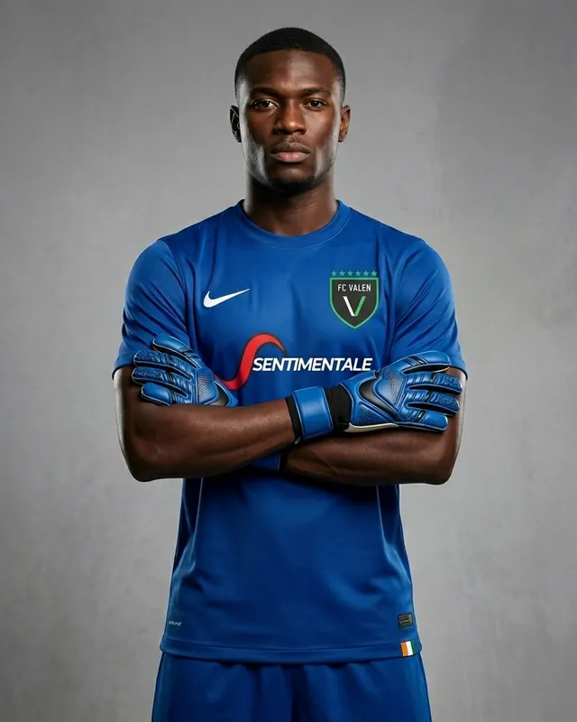
Marc-Arthur N'Guessan
Gardien
Côte d'Ivoire
Les joueurs et le staff qui font la fierté du FC Valen. Parcourez les fiches, ou cliquez sur le terrain pour composer l'équipe type.

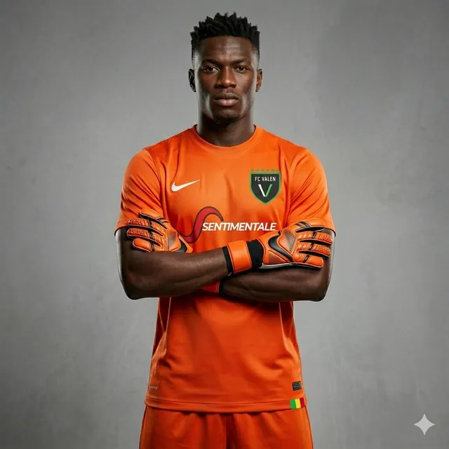
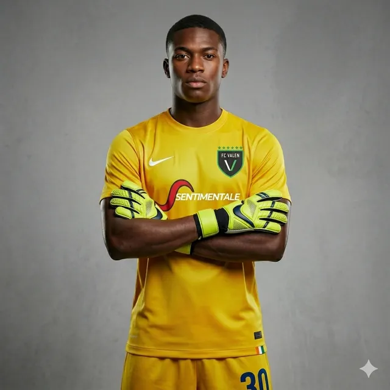
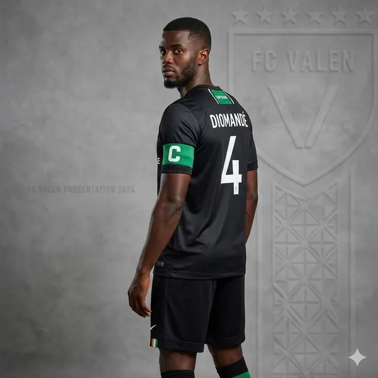
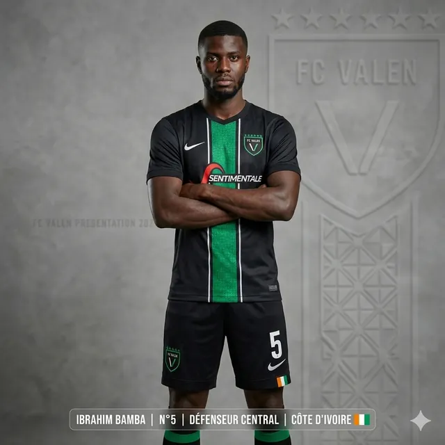
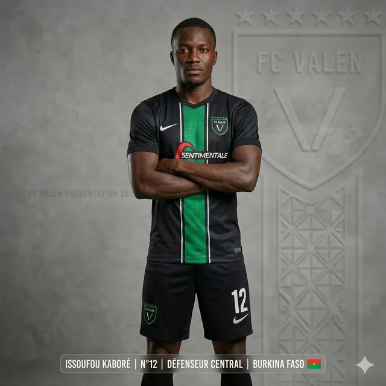
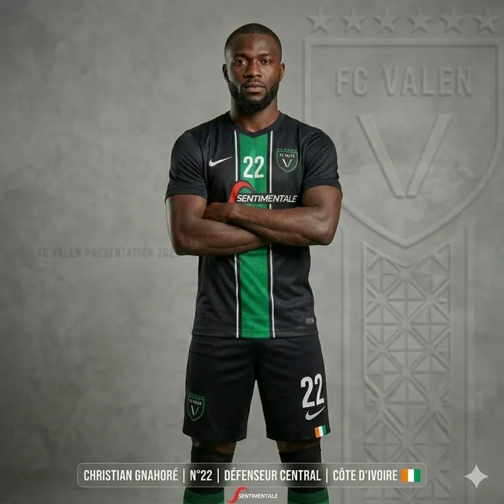
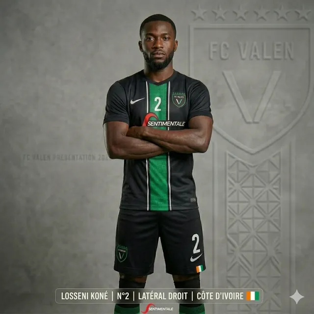
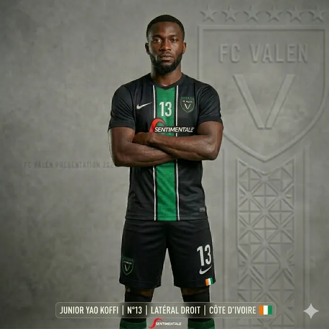
Composition type en 4-3-3. Cliquez sur un joueur.
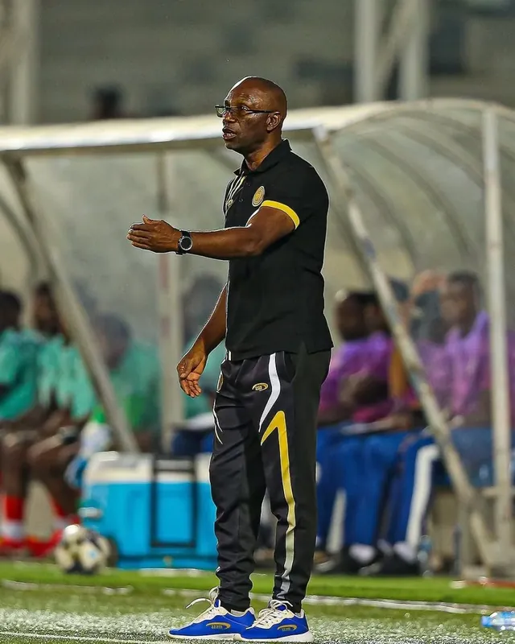
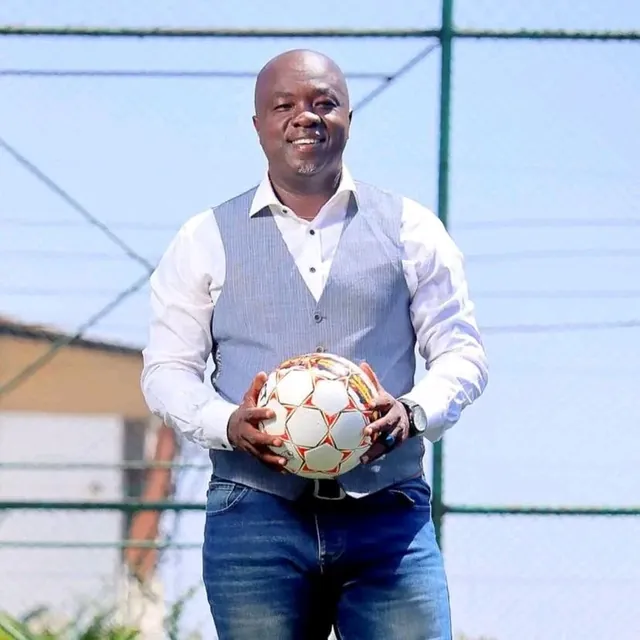
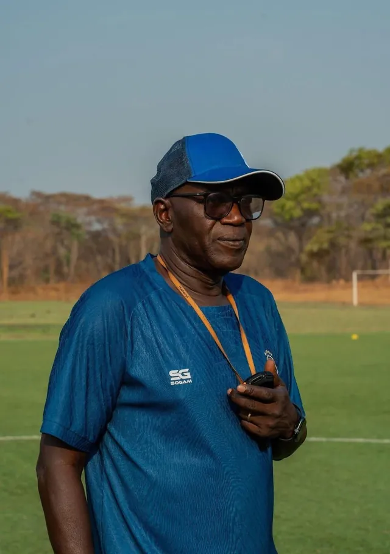
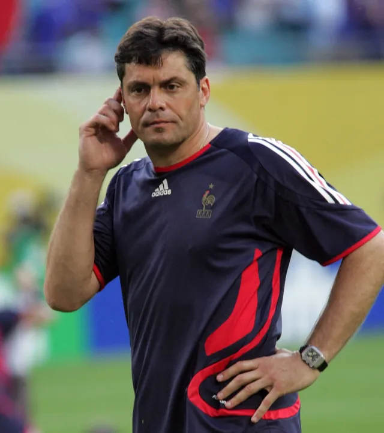